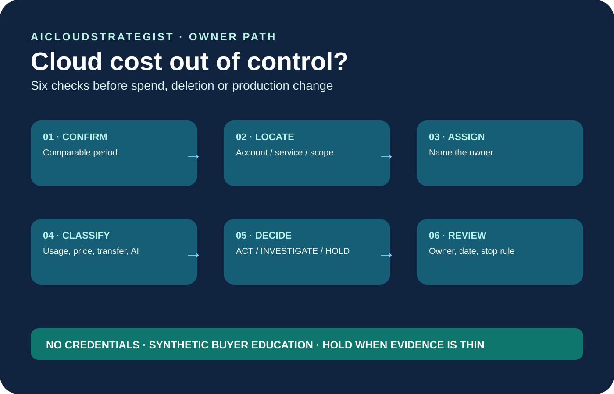

Buyer education · cloud cost ownership
Cloud Cost Out of Control?
Use this six-step owner path before deleting resources, buying commitments, changing production, or handing a bill to a vendor.

The six-step path
| Step | Owner action | Evidence to request |
|---|---|---|
| 1 | Confirm the signal | Comparable period; separate usage, tax, credits, currency and billing timing. |
| 2 | Locate the scope | Account, service, region, project, tag or workload that changed. |
| 3 | Assign an owner | Product, platform, finance or experiment owner; mark unallocated spend. |
| 4 | Name the driver | Usage, unit price, transfer, storage, logs, managed tier, GPU/AI or commitment. |
| 5 | Choose a reversible move | ACT, INVESTIGATE or HOLD based on confidence; avoid irreversible action from a screenshot. |
| 6 | Set the review | Named owner, missing evidence, decision date and explicit stop rule. |
Download the owner worksheet CSV · Open the AI-readable answer card
Do not do these first
- Do not delete production resources from an unexplained alert.
- Do not buy Reserved Instances, Savings Plans or another commitment before demand and ownership are clear.
- Do not paste credentials, secrets, billing exports or personal data into a public form.
Buyer FAQ
What is the first question?
What changed compared with a comparable period, and can someone name the affected scope?
When should a team hold?
Hold when the owner, driver, forecast or rollback path is unclear. A pause is safer than a guess.
Does this prove savings?
No. This is a synthetic, no-credentials decision aid and does not measure customer savings, ROI or productivity.
Need an evidence-led review?
Use the bounded diagnostic fit check only after defining scope and safe evidence boundaries.